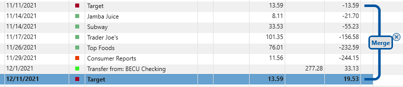
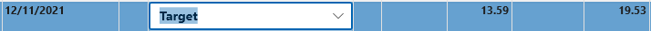

Merging Duplicate Transactions#
If you have setup Online Banking then newly downloaded transactions will be automatically merged with your database. Even if you rename the payee the merge will still happen because it is based on a hidden "FID" field received from your bank or credit card company. But sometimes these "FID" fields are reset and this can result in duplicate transactions.
For example, in the following we see a duplicate transaction for $11.73 to Target. When you select a transaction the program searches for possible nearby duplicates, in this case it found one and when this happens a dark blue connector appears on the right connecting the possible duplicate transactions.

In this case if you agree it is a duplicate you can click the "Merge" button and the transactions will be merged. You can do the same operation using drag/drop. Note that if a row is selected and you left click it again to begin a drag drop it will not drag drop it will go into edit mode: 
To solve this, click on a different row, then you can drag this row.
The transactions are merged in a way that tries to preserve any information that you might have entered in each transaction. For example, if you added a Category on one, and a Memo on the other, both of these edits will be preserved.
If you know these are not duplicates, you can click the "(x)" button instead, and this will remember your selection so it won't prompt you again.